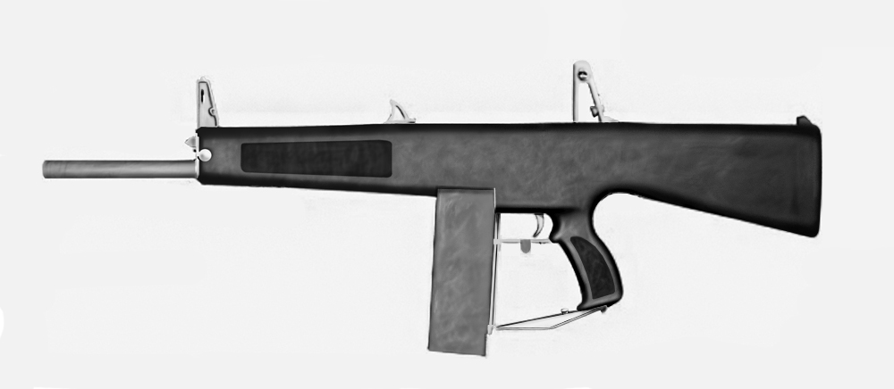

AA-12自動霰彈槍

AA-12自動散彈槍（英語：Auto Assault-12），最初的設計又被稱為艾奇遜突擊散彈槍（英語：Atchisson Assault Shotgun）是一款由美國槍械設計師麥克斯韋·艾奇遜於1972年研發的全自動戰鬥散彈槍。這款武器能夠以300發／分鐘的發射速率作全自動射擊，並且以8發可拆卸式彈匣或20、32發可拆卸式彈鼓供彈，發射12鉛徑散彈。
- 自從其專利出售給位於田納西州的憲兵系統公司（英語：Military Police Systems, Inc.，簡稱：MPS）以後，直到目前於2005年定型的版本已經發展了超過18年。而原來的設計後來亦被應用在幾個武器系統的基礎上，包括韓國大宇集團生產的USAS-12戰鬥散彈槍。
AA-12可以使用不同種類的3英吋12鉛徑散彈麥格農彈藥，諸如鹿彈、重彈頭，以至非致命性橡膠擊昏警棍彈。與許多12鉛徑散彈槍一樣，它也可以發射照明彈、信號彈，以及特殊的FRAG-12高爆彈藥系列。後者分別有19公釐尾翼穩定高爆彈（HE）、破甲彈（HEAP），和融合傳感器使其可以在半空引爆的「空爆」破片彈藥（HEAB）。
2004年，憲兵系統公司生產了10把可供發射的AA-12的樣槍，並且交給美國海軍陸戰隊進行試驗。
由更多工業公司（英語：More Industries）製造的HAMMER無人防禦系統在H2X-40砲塔上採用雙聯裝AA-12作為其搭載武器。
神經機器人學（英語：Neural Robotics）還將AA-12裝上他們無人駕駛遙控自動直升機（英語：AutoCopter）作為主要武器。
民用半自動版自2018年7月開始接受少量預定，價格從3,200—3,500美金不等。